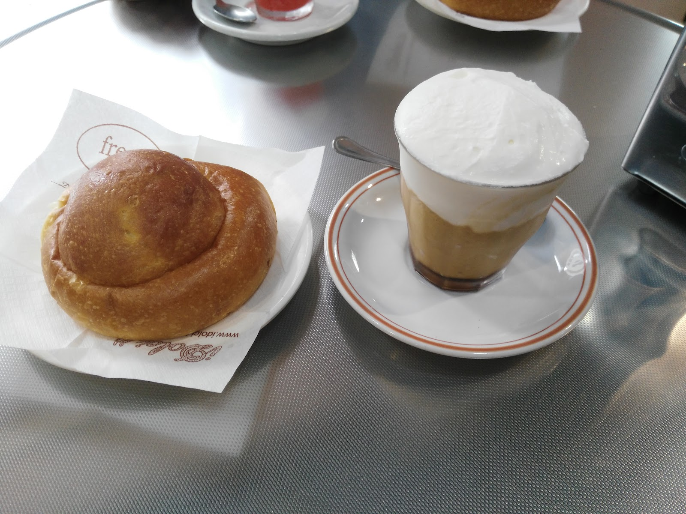
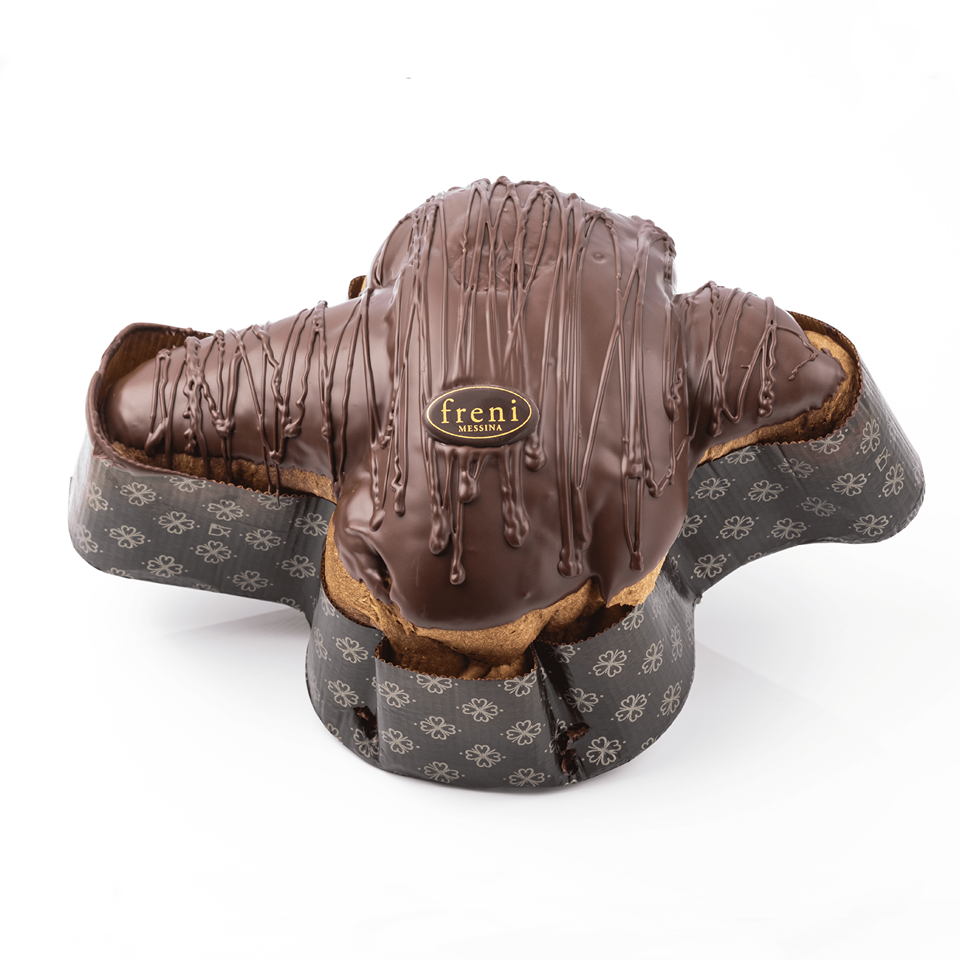
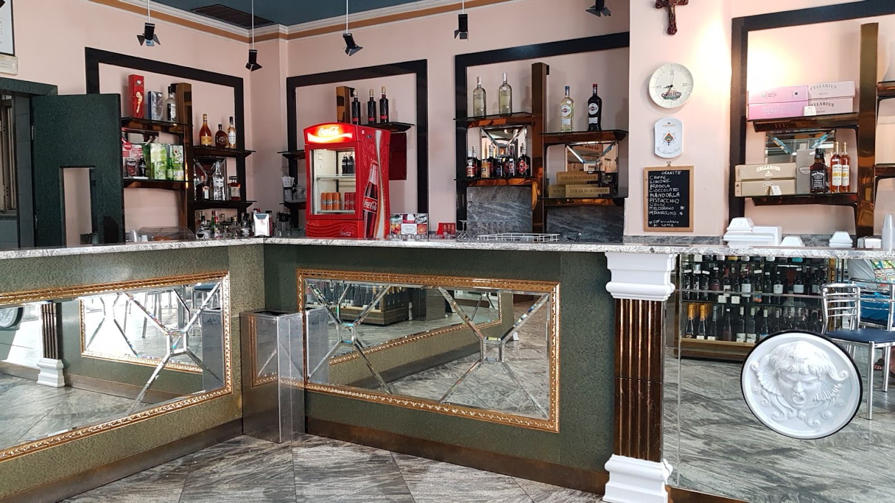

Granita e brioche
La colazione di Messina: granita mantecata e brioche col tuppo, tutto l’anno.
Fondata da Giuseppe Freni nel 1968 e guidata oggi dal maestro Lillo Freni: granita con la brioche, pignolata, paste di mandorla e grandi lievitati che partono dal laboratorio di Messina per tutta Italia.

La tradizione messinese, eseguita come si deve: poche cose, tutte di laboratorio.

La colazione di Messina: granita mantecata e brioche col tuppo, tutto l’anno.

Colombe e panettoni a lievitazione naturale, incartati a mano nel laboratorio di famiglia.

Paste di mandorla, biscotti e torrone gelato: i dolci da credenza che viaggiano bene.
La guida Pasticceri & Pasticcerie 2025 ha assegnato a Lillo Freni il premio per la valorizzazione delle produzioni del territorio: agrumi, mandorle e ricotta di Sicilia lavorati come materia prima, non come etichetta.
La sede storica di via Adolfo Celi, riaperta dopo il restauro, è il posto dove assaggiarlo.

Pignolata, biscotteria, lievitati e specialità da viaggio si ordinano online e partono da Messina con corriere. Il catalogo completo è su idolci.it.
Sede storica a Messina, zona San Filippo.